1. Öppna safari i din iphone
1.1 Leta upp var du har Safari på din iPhone
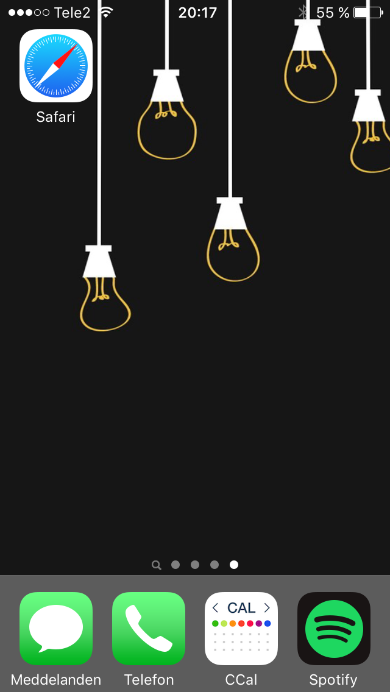1.2 Starta appen
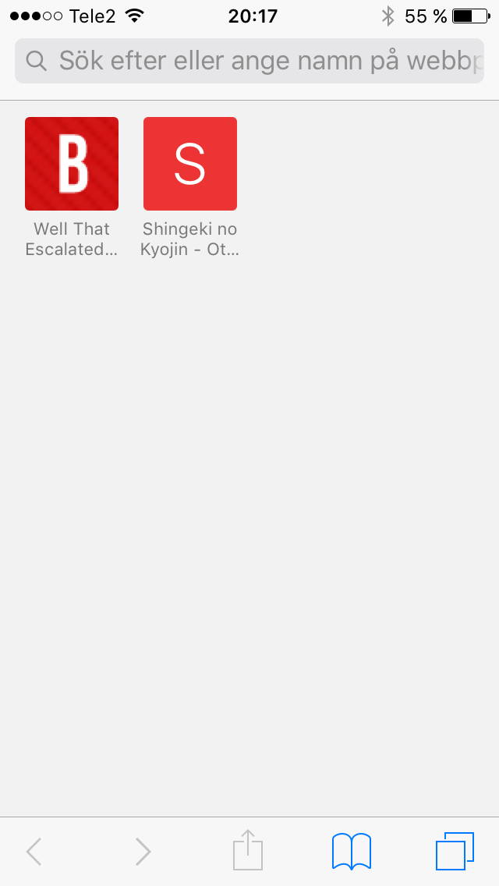
2. Öppna sidan
2.1 Skriv in adressen till sidan i adressfönstret (Eller scanna QR-koden om du är bekant med det)
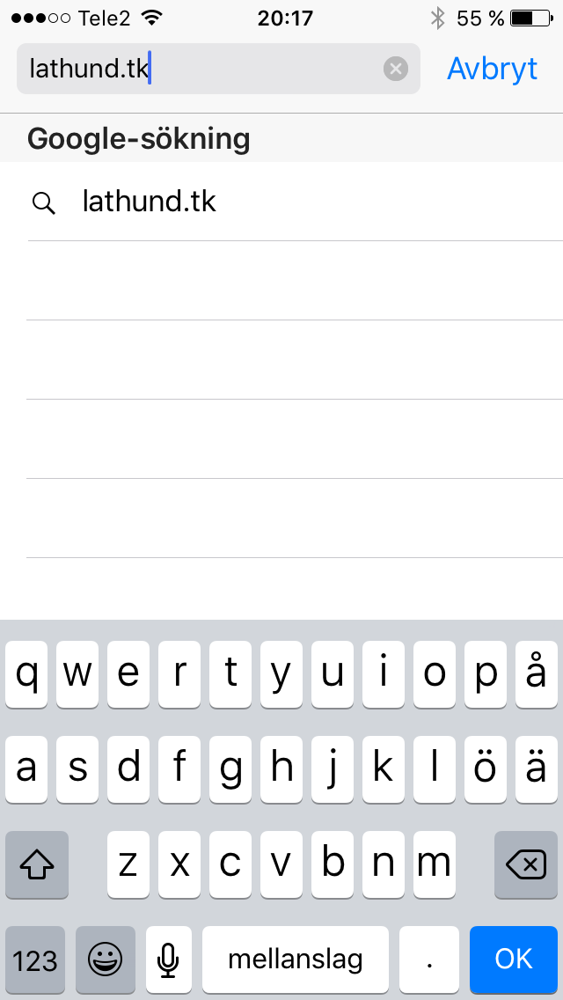2.2 Låt sidan ladda klart
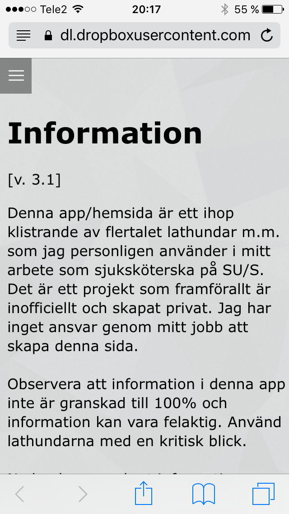
3. Lägg til på hemskärm
3.1 Klicka på ikonen som föreställer en fyrkant, med en pil ifrån sig. (Se bild nedan)
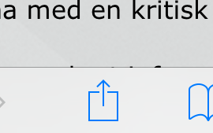3.2 Nu öppnas en meny
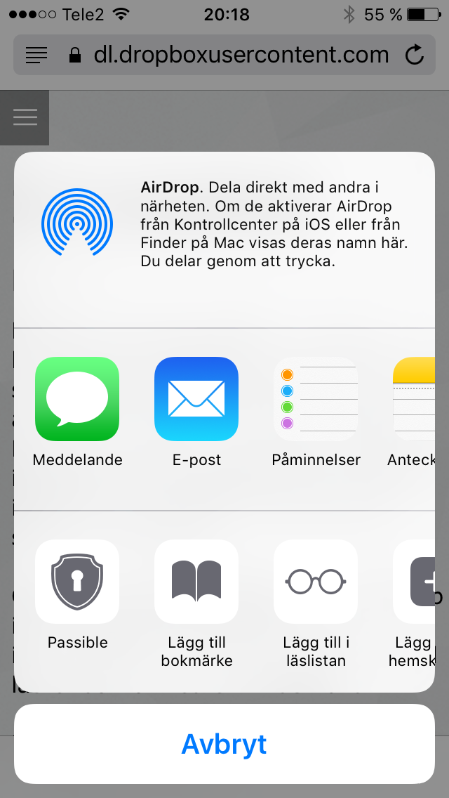3.3 Hitta knappen som ser ut som en fyrkant med ett plus i sig, med undertexten "Lägg till på hemskärm"
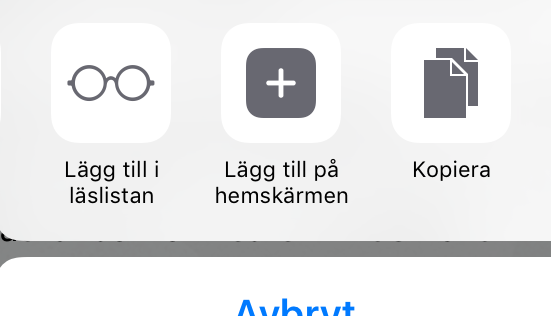3.4 "Lägg till" menyn kommer nu fram. Du kan här välja att ändra namn (onödigt)
3.5 Klicka på "Lägg till" uppe i högra hörnet
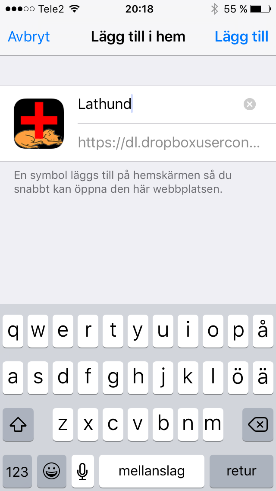
4. Klart!
4.1 Webbappen är nu installerad och lägger sig på hemskärmen
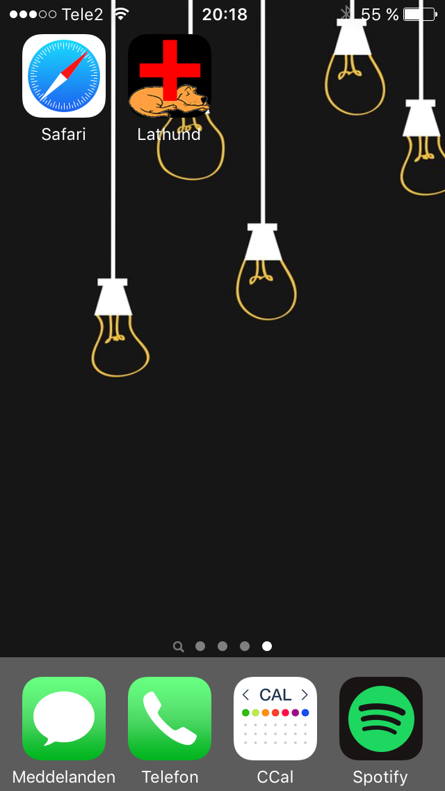4.2 Webbappen beter sig som en vanlig app i iPhonen
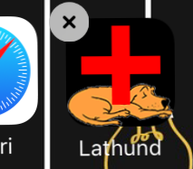4.3 Även när du startar webbappen, kan man inte se någon skillnad
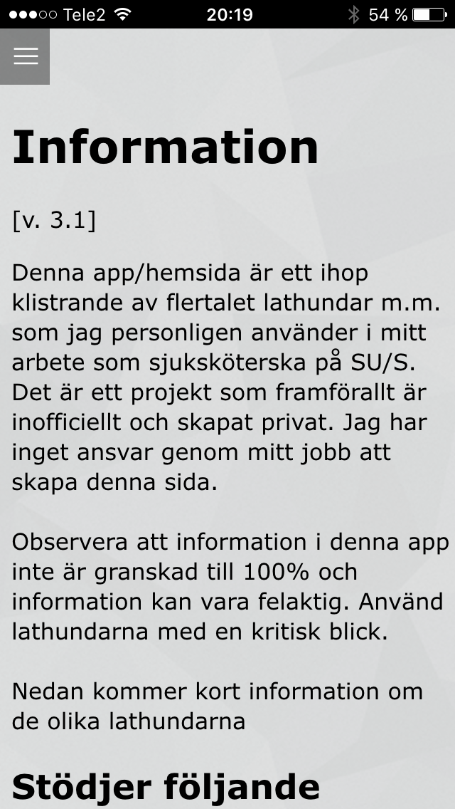